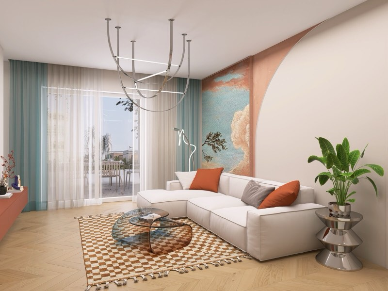

Interni residenziali
L'incontro tra spazio e vivibilità
Accompagno i miei clienti dalla prima idea fino alla realizzazione. Questo spesso vuol dire ripensare la distribuzione degli ambienti, scegliere materiali e luci, e seguire il cantiere insieme a chi lo abiterà.
- Progetto degli interni
- Consulenza per ristrutturazioni
- Home staging